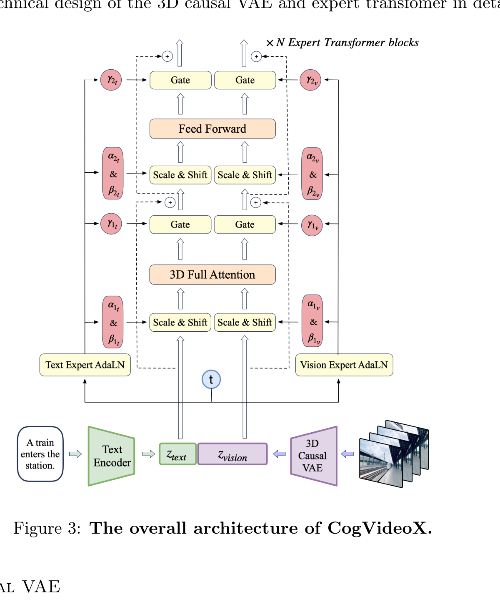

CogVideoX: Text-to-Video Diffusion Models with An Expert Transformer
Zhuoyi Yang 等 · ICLR 2025 · arXiv:2408.06072 v3 · Zotero RSHYMXS9
这是正式 ICLR 2025 论文。CogVideoX 把 LDM 扩展到视频时，集中解决四件事：时空压缩、文本—视频深融合、混合时长/分辨率训练，以及高质量视频字幕和过滤。它是视频生成地基，不是带动作监督的 WAM。
§1 三个核心结构
§2 一张图读完流水线

1. 视频压成时空 latent
3D VAE 同时减少 $T,H,W$，将昂贵的像素序列变成可处理 token。
2. 文本编码并拼接
T5 embedding 与 patchified video latent 沿序列维拼接。
3. 分模态调制
文本和视频分别用 Expert AdaLN 产生调制参数，主干仍可共享知识。
4. 联合注意力预测去噪目标
3D full attention 让任意时空 token 与文本 token 交互，输出再 unpatchify。
§3 3D Causal VAE：Video DiT 的算力闸门
- Temporal causal convolution
- 时间 padding 放在过去侧，生成/切块时不偷看未来。
- KL regularizer
- 保持连续 latent 可采样，并控制尺度。
- 上下文并行
- 长视频编码沿时间切分到多设备，利用因果卷积只交换有限边界。
更激进的 $16\times16\times8$ 压缩即使增加 latent channel，也让收敛更困难；Video VAE 仍存在“压缩率—细节—训练稳定性”三方权衡。
§4 Expert Transformer：融合，不等于完全共享
普通 DiT 常用一套 AdaLN 由 timestep/条件统一调制；CogVideoX 让文本与视觉 token 各自拥有 AdaLN 参数，再共享 3D attention 与 FFN。这样既保留跨模态信息流，又允许两种统计分布独立归一化。
论文消融认为 3D full attention 在同等设置下更有利于视频质量和训练收敛；代价是序列长度平方级开销更重，这也是后续模型继续研究稀疏/分解注意力的原因。
§5 训练系统：模型以外的三块
| Multi-Resolution Frame Pack | 在固定 token 预算中装入不同分辨率与帧数，提升设备利用率。 |
| Progressive Training | 分辨率和时长逐级增加，避免一开始就承受最长序列。 |
| Explicit Uniform Sampling | 显式均匀覆盖 diffusion timestep，减少不同时间步损失尺度导致的曲线波动。 |
| Caption pipeline | 用视频 caption 模型生成密集描述，并结合质量、运动、物理与封面等过滤标签。 |
§6 论文证据与边界
§7 对 WAM 的意义
3D causal VAE、混合时长 batching、渐进式训练和密集 caption 都可直接服务动作条件视频模型。若把文本条件扩展为历史观测、机器人 proprioception 与 action，CogVideoX 是很自然的视频生成底座。
论文没有学习机器人动作接口，也没有验证干预一致性。WAM 必须回答：给同一初始状态换一个 action，未来 latent 是否产生正确、可重复的因果差异？